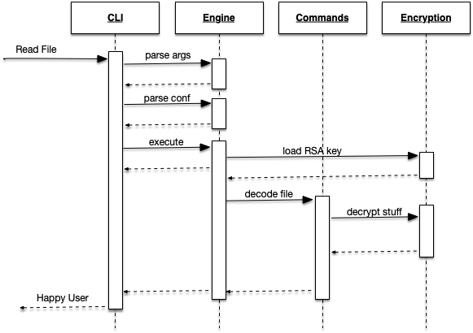

Tight Coupling, low Information Density
createUser :: ApiaryC c =>
Bool
-> NewUserData
-> ReaderT c (ExceptT AppError (LoggingT IO)) User
createUser sendPasswordSet dta = do
$(logDebug) $ "Creating new user " <> tShow dta
P.guardEmailAvailable (newUserEmail dta)
maybe (pure ()) P.guardPhoneAvailable (newUserPhone dta)
usr <- P.createUser dta
when sendPasswordSet (genAndSendInitialPasswordSet usr)
pure usr
Easy to write though...
What does this signature tell you about the function?
ApairyC c =>
Bool
-> NewUserData
-> ReaderT c (ExceptT Err (LoggingT IO)) Foo
Capabilities?
What can't it do?
What about errors?
As APIs
An Example
type ConfCryptM m ctx = ReaderT (ConfCryptFile, ctx) (
ExceptT ConfCryptError (
ResourceT m))
class (Monad m, MonadError ConfCryptError m) =>
MonadDecrypt m k where
decryptValue :: k -> T.Text -> m T.Text
class Monad m => Command a m where
evaluate :: a -> m [Text]
data ReadConfCrypt = ReadConfCrypt
instance (Monad m, MonadDecrypt (ConfCryptM m key) key) =>
Command ReadConfCrypt (ConfCryptM m key) where
Guiding our Implementation...
runConfCrypt ::
ConfCryptFile
-> ConfCryptM IO () a
-> IO (Either ConfCryptError [T.Text])
case parsedArguments of ->
RC KeyAndConf {key, provider} ->
runConfCrypt parsedConfiguration $
runWithDecrypt key provider ReadConfCrypt
Initial RSA Algorithm
Oh no, KMS Support??!!